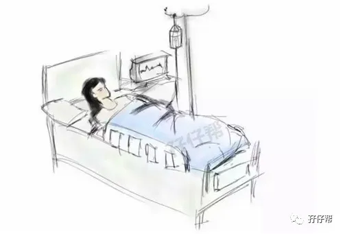
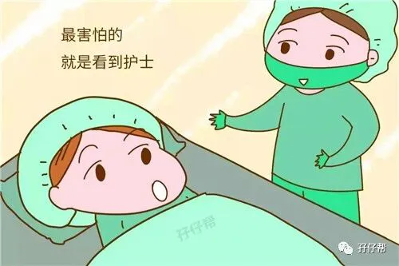
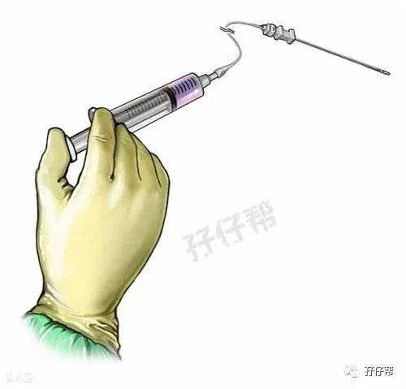
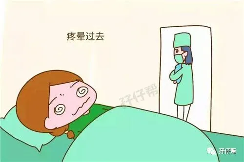
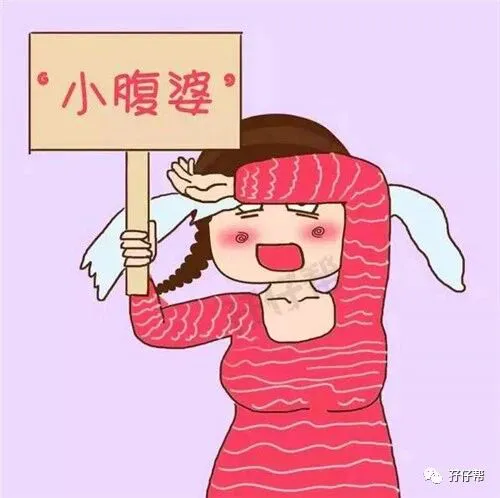
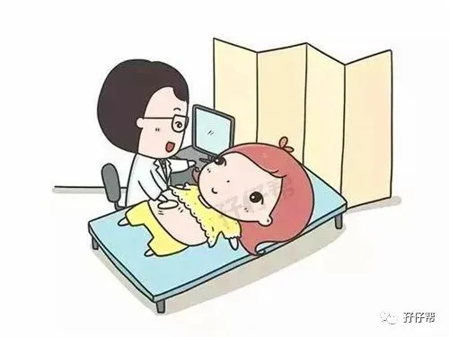

欢迎关注孖仔帮～
★ 前言 ★
我是圆圈妈，孖仔帮sgguy.com接下来要给双胞胎准妈妈分享圆圈妈的双胎剖宫产记实录，因篇幅较长，将分为上中下三部分，分别是：
（上）你看不看？双胞胎妈妈直播剖腹产全过程
（中）你看不看？双胞胎妈妈直播剖腹产全过程
（下）你看不看？双胞胎妈妈直播剖腹产全过程
备注：图片来源于网络，考虑到孕妈咪的产前心情，图片大多都采用搞笑漫画形式，让剖腹产没那么恐怖。
1
继上一篇《（中）你看不看？双胞胎妈妈直播剖腹产全过程》提到，手术顺利，我活着下手术台了，被医生接入爱婴区。
接下来的6个小时平躺（不能垫枕头）禁止食物和水，非常难熬。
我在术中就有反胃想吐的感觉，现在终于忍不住，开始呕吐了。
起初是口水，接着是酸水，然后又咳嗽了几下，被护士听到了，马上有值班医生带着一群护士进来了，问我哪里有不舒服的地方。
“我全身上下都很痛”我回答医生，我有点意识模糊了，感觉很沉很困，可是太痛了根本无法入睡，只能眯着眼。
医生对我检查了下，确认没有问题就出去了，因为血压高，护士给我用上了心电监护仪，并叮嘱圆圈爸有情况随时叫医生。
麻醉药一点点地在消失，隐约感觉脚趾头可以动几下了！而伤口的疼痛愈演愈烈。
我整个人都不好了，又饿又渴，不能吃东西也不能喝水，好煎熬啊！
圆圈爸看我嘴唇都干裂脱皮了，只好用棉签沾点温水涂在嘴唇上。
2
10点钟左右，距离手术结束已经过去3个小时了，麻药已经完全效了。我那来之不易的浅睡状态活生生被痛醒了。
疼！疼！疼！
我忍不住呻吟起来，不知道是不是喊出来没那么疼，反正哼哼唧唧得好像会好一点。
这时进来一个护士，二话不说，掀开被子就使劲按我的肚子。
我反应很激烈，惨叫一声，惨叫声响彻整个病房，那是我术后虚脱状态下拼尽全力的一声呐喊。
我发誓，如果我能动，我的本能一定可以把那护士踹飞到太平洋去。
虽然我已经痛的生不如死了，依然被按肚子的护士呵斥，叫我不要大喊大叫。
如果眼神可以杀人，这个护士已经被我秒杀得尸骨全无了。
虽说这是为了促进子宫收缩，但是一点提示都没有，害我一点心理准备都没有。
我总算是见识到剖腹产的第一痛----按肚子。
那种痛，终身难忘，真是要昏死过去那种！比做内检的时候还要痛上百倍。
我也终于明白待产区那些尝试顺产的孕产妇为何会喊叫得那么凄惨，因为真的很痛！
有人形容那种痛是从鼻孔里拉出一个西瓜出来。嗯！感觉比这个更痛吧！
自从那次被按肚子之后，我对护士出入病房有阴影了，每次只要有护士进来，我都很警觉地盯着她们看。
就算她们只是过来查看伤口或者给我量血压，量体温，我都防备地不让她们碰我。
跟我一起受罪的还有圆圈爸，他想安慰我又词穷，而且他奔波了一天也困得说不出话了，又不敢睡下，怕我有啥不测！
3
凌晨一点多钟，终于熬过禁食禁水的6小时，沙袋撤走了，可以垫起枕头喝水了！
圆圈爸给我倒了杯温水，我用吸管一口气喝了一大杯水，不小心呛到，咳嗽了下，咳的时候不小心牵动到肚子。
那个@#￥%疼！疼得差点背过气，无法呼吸了。
后半夜之后，根本没法入睡了，好像听到伤口滋滋地疼！
我实在疼得受不了了，我不想跟那个36周的双胎妈妈那样痛得抽过去，我也不管麻醉药会有多大副作用，管不了那么多了。
我只知道我很痛，我要止痛药！我要止痛药！
圆圈爸跑医务室三催四请，终于等来了护士在我屁股上扎了一针。
我好想问候下发明麻醉药的人，你真是世界上最可爱的人，世界因你的麻药的存在而美丽
此时此刻，我已经筋疲力尽，心力交瘁了。打了麻药没多久，疼痛真的缓解了不少，我终于可以好好睡一觉了。
4
术后第一天，醒来的时候已经是七点钟了。有护士给我量血压换吊瓶，不断有不同的护士进来做这做那，每次都是那些话，
“排气了吗？”
“要多翻身，排恶露啊。”
“不要一直躺着啊，不然会血栓啊。”
“孩子他爹要给你媳妇勤换垫子，多给她翻身啊。”
于是，我即将面临剖腹产的第二痛----翻身。有人稍微碰了下我的床边，我都一阵肉疼，更不说要我翻身了。
我不！我绝不！
可是护士一个劲说，多动！多翻身！不然会有并发症！我被并发症这个词语吓到了，只好听从护士的建议。
我的上帝啊，简直没法去形容那种痛，刀口以下的部位感觉都不是自己的了，都不听使唤了！
只是平躺侧躺之间交替那么简单的动作，在我眼里，居然那么遥不可及。稍微挪动下都那么艰难，那么痛的锥心刺骨！
可是，再痛也要翻身！
我抓着床围栏，慢慢地挪啊挪啊，翻身三秒钟的时间，我用了五分钟，终于从仰卧翻到了左侧卧，太振奋人心了！
翻身一次，就跟下地狱一层似的！还好，多翻几次，找到感觉，也没那么疼了！
下午，在新生儿科工作的妞姐给我们发来了圆圈兄弟的照片！
这是第二次看到圆圆圈圈，看到他们的照片，我和圆圈爸激动的说不出话！拿着手机上的照片研究了很久很久，看着看着，不自觉的笑了！
5
术后第二天，早晨医生来查房，给我的伤口换药，消毒。我跟医生反馈我那花里花俏的肚子还是很大，
“双胎肚子，本来就超负荷，能收缩成这样已经不错了。”医生的回答让我很无语，
上午护士来给我换吊瓶的时候，我嚷嚷着要拔尿管！实在受不了有尿管插在那里的束缚感。
尿管撤走之后，我也换上了卫生巾，不用产褥垫了！但依然要勤换，随时观察恶露的情况。
拔掉尿管意味着我要开始站起来了！我知道我马上就要面临剖腹产的第三种痛—术后第一次下床
下午，我再也憋不住尿了，只能站起来去上厕所了，纠结了一个上午，神圣的时刻就要到来了，我要开始术后第一次下床了！
我抓紧床沿，慢慢挪起来，坐直。坐直那一瞬间，有种天旋地转的感觉！圆圈爸和小姑子一人一边把我架起来了，我双脚慢慢地着地，缓缓地站起！
我两只手分别搭在他们肩膀上，“啊……”仰天一声惨叫！疼！疼！疼！
皮肉分离又重合牵扯的疼，撕心裂肺的疼！
隔壁床的家属都替我疼，全都皱着眉头看着我疼！我维持着站立的姿势好几分钟之后，迈出我的第一步！
啊……啊……
我怕被人看到我那疼得狰狞扭曲的脸，我低着头又惨叫了几声。我要加油！我不疼！我不疼！
第一步！第二步！
我慢慢地，一步步地挪着，才3米远的卫生间，被我走了十分钟！圆圈爸和小姑子的脖子上都被我压出淤青一片了！第一次站起来就这样成功了！
下午，通气了，终于可以吃东西了。但仅限于稀饭和米汤，暂时不能开荤。
晚上，第二次站起来，我已经不用两个人扶了，我放开圆圈爸的手，自己扶着桌椅，慢慢地往厕所挪。
6
术后第三天，醒来发现前襟和领口都湿了一片，两侧乳房像两块大石头一样硬邦邦的，不断有浅黄色的液体流出，原来我涨奶了。
护士例行检查量体温的时候，发现我还有点低烧。因为不打算喂母乳，我让医生开了溴隐亭，一种回奶药。
新生儿科不断传来不好的消息，圆圈起初不能喝奶，经检查，是肠胃功能发育不良，只能输液打营养针，接着陆续发现哥俩有呼吸暂停的现象，已经用上了呼吸机。
圆圈爸每天在新生儿科和产科之前穿梭，跑上跑下，忙前忙后，晚上也没好好睡，天天跟打鸡血似的，随时待命。
如果说我很痛，痛到极致，那圆圈爸是很累，累到虚脱！
而我也不争气，可能是操心过度也可能是没吃好睡好。
我的血压一直居高不下，我开始出现幻听和幻觉，看东西都重影模糊了，整个人都很乏力，恶心。
医生建议让做CT 排除脑积血，圆圈爸只好三更半夜推着我去急诊部做CT，还好只是虚惊一场。
术后第四天，护士给安排了阴超，主要是检查子宫的愈合情况。
B超室距离病房约100米，考验我的时候到了，我扶着医院走廊的扶手，一步一个脚印，艰难地挪到了B超室。
只有100米的距离！我居然走了大半个小时，这是我手术后第一次走那么久那么长的路！
原来腿脚不灵便是件多么悲惨的事情，除了生理上，精神上也很受折磨。
B超的时候，我本能地抗拒着探头碰到我的肚子，我再也不想经历被人按肚子那种痛，跟切腹没什么区别！
还好，B超显示，子宫愈合正常，也没有残留物！
术后第五天，已经有护士催我出院了。我以血压不稳定，低烧为由，又死皮赖脸地多住了一天。
其实是希望可以离圆圈更近一点，以便有什么紧急状况，我和圆圈爸可以第一时间在现场。
术后第六天，实在没有理由继续住下去了，我们去新生儿科探视的时候，医生也说圆圈兄弟一时半会儿还不能出院，我和圆圈爸商量了下只好办出院手续先行回去了！
END
本文出自孖仔帮，专注双胞胎育儿经验分享，著作权归孖仔帮所有。
结语
圆圈妈轰轰烈烈的剖腹产全过程纪实录结束啦，
孖仔帮sgguy.com后期还会陆续更新出圆圈妈的双胎子宫日记系列推文，主要是分享双胎妈妈剖腹产的注意事项（分术前，术中，术后）
号称圆圈妈的剖腹产全过程记实录的姊妹篇哦，因篇幅较长，将分为三部分，分别是
1. 双胎子宫日记|圆圈妈的双胎剖宫产回忆录之术前准备篇
2. 双胎子宫日记|圆圈妈的双胎剖宫产回忆录之手术进行中
3. 双胎子宫日记|圆圈妈的双胎剖宫产回忆录之术后护理篇
温馨提示：
上期推文：
（上）你看不看？双胞胎妈妈直播剖腹产全过程
（中）你看不看？双胞胎妈妈直播剖腹产全过程
下期预告：
1. 双胎子宫日记|圆圈妈的双胎剖宫产回忆录之术前准备篇
本文出自孖仔帮，专注双胞胎育儿经验分享，著作权归孖仔帮所有。
各位双胎妈妈，更多孖仔帮原创育儿文章请猛戳 "阅读原文" ，或者直接上圆圈妈的个人博客，大把双胎孕期育儿心得经验分享。






